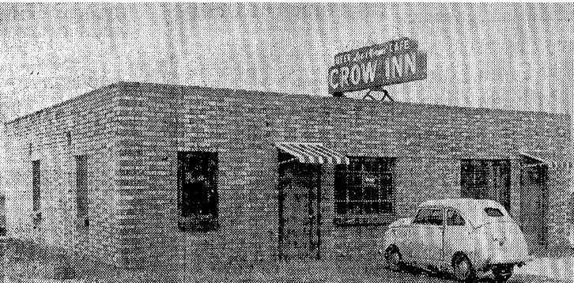

Idaho Statesman December 3, 1948
START OF CONSTRUCTION on Lucky Peak dam, 10 miles southeast of Boise, has brought a number of eating establishments and taverns to the vicinity, and several more are being planned.
Typical of these places are these two, the Lucky Peak Inn, operated by Frank and Leo Fulkerson, and the Crow Inn, operated by Lee Lukehart and Norvin Wroughton.
The former's days are numbered at the present location, since it is situated only a few hundred feet behind the dam site, and will eventually be under water.
The Crow Inn is situated between the old Barber townsite and Diversion dam, not far from the place where the new road will take off from Highway 21 to go around the future reservoir site.